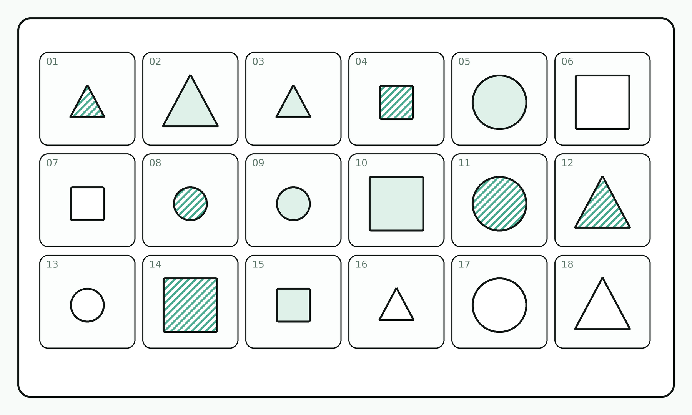

Оценка сформированности навыков логического мышления
В этой работе нужно не угадывать «правильный ответ», а показать, как выполняется логическая классификация объектов по выбранным признакам.
Перейти к работе →
Что такое классификация?
Классификация — это распределение объектов на группы по выбранному признаку или по нескольким признакам. Чтобы выполнить классификацию, сначала определяют, какие признаки есть у каждого объекта, а затем выбирают основание деления.
У каждого объекта можно определить три признака:
- форма: круг, квадрат, треугольник;
- размер: большой или маленький;
- заполнение: контурное, полосатое, залитое.
Сначала перечисляют признаки, затем выбирают основание деления, сравнивают объекты, распределяют их по группам и проверяют, что каждый объект вошёл только в одну подходящую группу.
Набор объектов для исследования
Рассмотрите изображение. В наборе представлены 18 разных сочетаний формы, размера и заполнения. Один и тот же набор можно классифицировать несколькими способами — это зависит от того, какой признак выбран основанием деления.
Ход работы
Классификация по одному признаку
Разделите объекты на группы, используя только один признак.
- Запишите, какой признак выбран.
- Укажите, сколько групп получилось.
- Назовите получившиеся группы.
Другая классификация по одному признаку
Выполните новую классификацию того же набора, но выберите другой признак.
Классификация по двум признакам
Предложите способ разделения объектов сразу по двум признакам. Например, сначала по форме, а внутри каждой формы — по размеру, либо наоборот.
Запишите ответ в тетради
Запишите ответ в тетради
Запишите ответ в тетради
Классификация по трём признакам
Определите, можно ли классифицировать объекты сразу по трём признакам. Объясните способ классификации и укажите, чем будет отличаться каждая итоговая группа.
Запишите ответ в тетради________________________
Запишите ответ в тетради________________________
Ответьте на вопросы
- Какие признаки объекта необходимо определить до начала классификации?
- Почему один и тот же набор объектов можно разделить на группы несколькими способами?
- Чем классификация по двум признакам сложнее классификации по одному?
Запишите ответ в тетради________________________
Запишите ответ в тетради________________________
Запишите ответ в тетради________________________
Сделайте вывод
Сформулируйте, какие действия необходимо выполнить, чтобы логически классифицировать объекты. В выводе желательно отразить последовательность действий: выделение признаков → выбор основания классификации → распределение по группам → проверка результата.